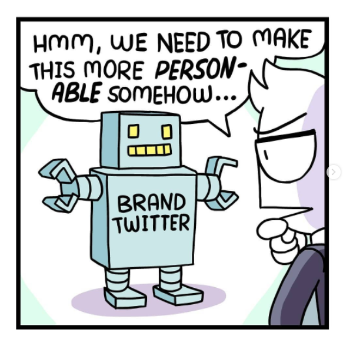

Biggest mistakes in Self-promotion and Marketing
Jan 5 '22 • Written by Yassen Shopov
üìñ 9 minute read
A common fear and source of anxiety for tons of people is the need to self-promote and pitch your work to higher instances.
It is an unintended side-effect of the oversaturated job market and job opportunities flying left and right, while the ease of applying for positions is reaching absurd levels. We are taught from school age to constantly sell ourselves, apply for higher and higher positions, pursue higher paces of work/study life. And this could very much be a great thing, as it opens so many doors for us to go straight on.
However, many people develop a habitual dislike to the idea of putting yourself out there, and any act of self-promotion feels like bragging, lying, objectifying yourself and your labour. It is a crucial, yet difficult and cumbersome part of any career progressions, since you do need to catch the attention of your higher-ups in order to get promoted, let’s say.
What is more, with the rise of remote work and more and more positions becoming available for freelancers, the act of self-promotion becomes increasingly necessary for most professions, traditional and non-traditional alike. But since self-promotion is a quickly changing territory and our skills in it tend to not change a lot from our school days, we should be aware of its potential pitfalls.
In this article, I will share with you the 4 different ways in which your self-promotion and marketing could go wrong (and of course, how to avoid them).
Ingenuity and Bragging
This may seem like an instinctual no-no, and you may think, “Yeah, obviously, you shouldn’t be exaggerating in a CV or a personal blog“. It would amaze you though how frequent of an occurrence it is.
Ingenuity can also take other forms and can still be harmful even if it is more subtle. Some companies specifically ask for “positive, team-working, cooperative“ people for some customer-facing positions. And while we should all strive to be a bit more positive and cooperative, some people are naturally more viable candidates than others in those aspects.
I used to work as a barista one summer, and it was your standard customer service job. However, I found out that it wasn’t the position I’m best suited for, since my better-working colleagues were genuinely more extraverted and open for conversation with any and every customer that came in.
In my current position as a freelance digital illustrator, I still have to communicate with customers. However, since most communication happens over email or chat, this allows me to not go out of my comfort zone too much and I actually manage to communicate better this way. The point being, we are naturally wired towards some career aspects, and since there are so many job opportunities nowadays, it shouldn’t be an issue of becoming the person to fit a job - rather, try to find a job that fits you, and apply accordingly.
Overselling
This is another thing common in both CVs and personal blog spaces. Often, when you are managing your personal brand (and just a disclaimer, our whole digital footprint could be considered a “personal brand”), you can fall into the trap of offering too much, especially in the beginning. It has happened to me as well - at the beginning of this blog series, I stated that it would teach people how to be more productive, successful, happy.
Now, while good, those were bold claims, that I, as a 20-year old student at the time, didn’t really have the capacity to promise. Not only were the topics I wrote about too broad and chaotic, but I also tried to use my very limited personal experience to cover some existential questions.
Nowadays, my approach has changed substantially.
I am currently trying to limit my topics to more narrow niches, and especially niches in which I have some sort of expertise. This way, my advice and personal lived experience actually matter and can affect the readers more. For example, if I wrote this article on the Biggest mistakes in Self-promotion and Marketing 2 years ago, when I was just starting out as a content creator, it just wouldn’t stick. I was doing exactly those mistakes that I am currently explaining. Even now, I am most probably making other mistakes that I will be talking about in a future article some years down the line. That’s just how experience works.
So, the conclusion to this point is to try and be more humble with your promises, and as far as your skills on the CV go, you should try to be as accurate to reality as possible, without playing down on them as well.
Forgetting to be human enough
I’m sure you are aware of some recent brand practices in social media that involve them trying to be more “relatable”.
The frequent result - brands appear even more inhumane, robotic, and a little bit creepy. It seems as if you have given an AI a bunch of tweets and let it run wild and write its own. This, while a great experiment in socialisation and artificial intelligence, is not the best way for those brands to appear relatable.
We can all learn a bit from those attempts by brands like McDonald’s or Coca-Cola.
The first thing that seems off when you see a tweet by McDonald’s saying “Feeling #lonely today.“ is the disparity between company and individual. We are all aware that behind this giant corporation stand thousands of different people, and it feels wrong for the brand to present itself as a singular entity.
Secondly, this attempt to turn the company avatar/logo/mascot into a real human further alienates the audience. If it was a singular person behind the brand, for example, if it was a popular celebrity, it makes much more sense to share how they’re feeling on social media. It all boils down to how well you know the “character” and specifics of your own brand or business and being in sync with this character.
Spreading yourself too thin
This point relates to the topic of narrowing down your niche. At the beginning of a brand’s lifetime, it is normal for some “soul-searching” to take place. Content creators don’t always have the clearest idea of what their brand should be and look like, and many people tend to have so many intertwined interests, as well.
And when you’re just starting out, it’s normal, but it leads to the effect of you spreading yourself too thin and not being able to focus in a specific set of niches.
This is why you should find a topic that you have a lot to talk about, a lot of subtopics to explore, and a long enough time horizon throughout which to spread your content. Doing this, you could more easily become a well-known competitor and expert in this set niche, when compared to the other approach - to create a little content on a ton of different topics, not connected to each other.